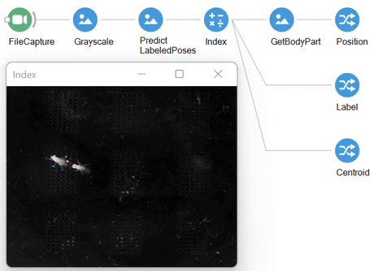

Getting Started
Bonsai.SLEAP is a Bonsai interface for SLEAP allowing multi-animal, real-time, pose and identity estimation using pretrained network models stored in a Protocol buffer (.pb) format.
Bonsai.SLEAP loads these .pb files using TensorFlowSharp, a set of .NET bindings for TensorFlow allowing native inference using either the CPU or GPU. By using the .pb file and the corresponding configuration file (training_config.json), the PredictFullModelPose operator from Bonsai.SLEAP will push the live image data through the inference network and output a set of identified poses from which you can extract an object id and specific object part position. Bonsai can then leverage this data to drive online effectors or simply save it to an output file.
How to install
Bonsai.SLEAP can be downloaded through the Bonsai package manager. In order to get visualizer support, you should download both the Bonsai.Sleap and Bonsai.Sleap.Design packages. However, in order to use it for either CPU or GPU inference, you need to pair it with a compiled native TensorFlow binary. You can find precompiled binaries for Windows 64-bit at https://www.tensorflow.org/install/lang_c.
To use GPU TensorFlow (highly recommended for live inference), you also need to install the CUDA Toolkit and the cuDNN libraries. This package was developed and tested with CUDA v11.3 and cuDNN 8.2. Additionally, make sure you have a CUDA compatible GPU with the latest NVIDIA drivers.
After downloading the native TensorFlow binary and cuDNN, you can follow these steps to get the required native files into the Extensions folder of your local Bonsai install:
- The easiest way to find your Bonsai install folder is to right-click on the Bonsai shortcut > Properties. The path to the folder will be shown in the "Start in" textbox;
- Copy
tensorflow.dllfile from either the CPU or GPU tensorflow release to theExtensionsfolder; - If you are using TensorFlow GPU, make sure to add the
cuda/binfolder of your cuDNN download to thePATHenvironment variable, or copy all DLL files to theExtensionsfolder.
Tip
For all questions regarding installation and use of SLEAP for training models, please check the official docs.
Simple example
The simplest Bonsai workflow for running the complete SLEAP top-down-id-model is:
If everything works out, you should see some indication in the Bonsai command line window that the GPU was successfully detected and enabled. The first frame will cold start the inference graph and this may take a bit of time, but after that, your poses should start streaming through!

Acknowledgments
The Bonsai.SLEAP package came about following a fruitful discussion with the SLEAP team during the Quantitative Approaches to Behaviour.